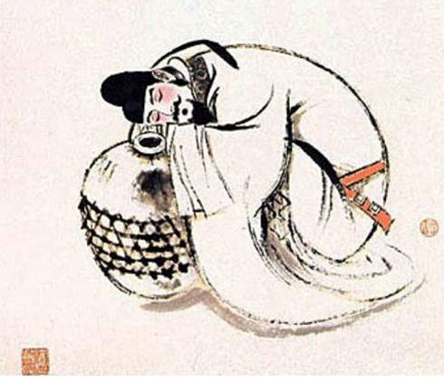
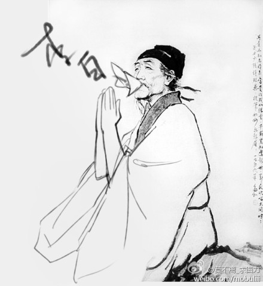

 李白（701－762），字太白，号青莲居士，出生地有争议一种说法是唐代设安西都护府管辖的碎叶城[1] （今吉尔吉斯斯坦的托克马克市西南约10公里）还有一种说法是出生在唐剑南道绵州（今四川省江油市青莲乡），自言祖籍陇西成纪人（今甘肃省天水市秦安县），还有一说是绵州昌隆人。是唐代伟大的浪漫主义诗人[2] ，被后人誉为"诗仙"。后世将李白和杜甫并称"李杜"。
 杜甫（712－770），字子美，汉族，祖籍湖北襄阳,生于河南巩县，自号少陵野老，唐代伟大的现实主义诗人，与李白合称"李杜"。为了与另两位诗人李商隐与杜牧即"小李杜"区别，杜甫与李白又合称"大李杜"，杜甫也常被称为"老杜"。